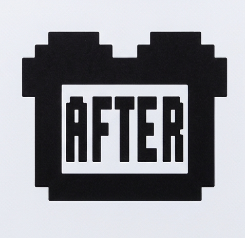
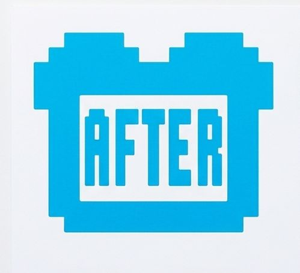

AfterToast: The Human Embodiment of Helvetica


The assignment sounded simple: find the human embodiment of Helvetica. In this episode of AfterToast, we first hear the original EMToast story “The Human Embodiment of Helvetica.” Then the AI hosts take a deep dive into the mysterious man who claims to be Helvetica, his obsession with being neutral, clean and efficient, the unsettling encounter with Times New Roman, and the story's strange turn toward AI-generated art. We also examine the idea at the heart of the story: what happens when AI becomes the Helvetica of the art world, producing an endless supply of perfectly acceptable, completely average human expression.
AfterToast is where we take an EMToast story and talk about what the hell just happened.
Original story: The Human Embodiment of Helvetica
Related posts

Study Finds That All of Humanity’s Problems Could Be Solved if We Just Had More Emojis
In a groundbreaking new study, researchers at the University of Emoji have found that all of humanity's problems, from war…

Humanzee Memoir Published: Courts to Decide Who Can Profit from This Love Story
Oliver, the human-chipmanzee hybrid who died in 2012 was more intelligent than was previously thought. A recent memoir was purportedly…

Incredible Hulk Madlibs for Puny Humans
Using the definitions provided, and your inner rampaging jade giant , fill out the boxes below with the correct type…

AfterToast: Paris Hilton Arrested for Making Out With a Freaking Monkey?
EMToast reported that Paris Hilton was arrested after admitting to making out with a monkey. According to the story, an…